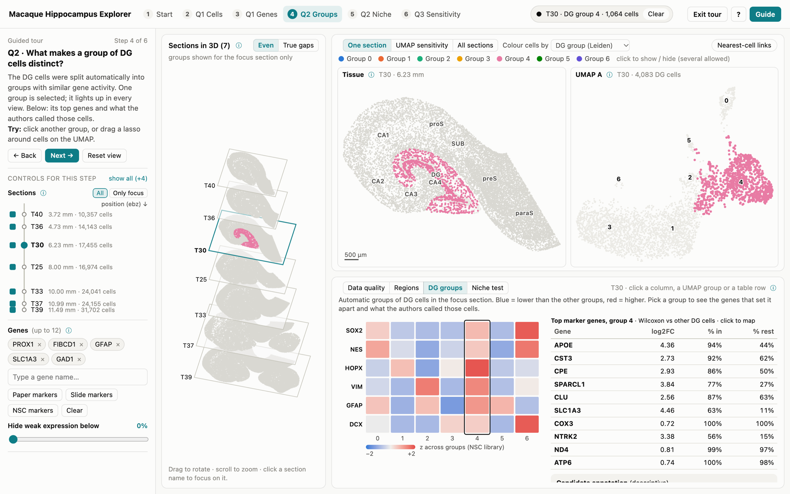

Macaque Hippocampus Explorer · How to use it
For neuroscientists — no coding or statistics needed
Page 1 of 2
The explorer shows about 139,000 single cells from 7 sections of one macaque hippocampus, measured with spatial transcriptomics (Stereo-seq; Fei et al., 2026).
For every cell we know where it sits and which genes it expresses. Double-click index.html (with the guided tour) or explore.html (no tour) in a web browser; nothing to install, no internet needed.

1
2
3
4
5
6
7
8
- Guided tour. 6 short steps, one question each; every step sets up all views. Exit tour (top right) shows all controls at once.
- Controls for the step. Sections: tick those in scope; Only focus = single-section view.
- Sections in 3D. All 7 sections stacked by position. Drag to rotate; click a name to focus on it.
- Tissue map — “where?” Each dot is a cell at its real position in the focus section.
- Toolbar. View: One section · UMAP sensitivity · All sections; and Colour cells by region, cell type, a gene…
- UMAP — “who is similar?” DG cells re-drawn so similar gene activity sits close together. Not anatomy.
- Evidence panel. Charts and tables that answer the step's question.
- Tour & help. Start / exit the tour, ? = welcome card, Guide = this sheet. Hover any ⓘ for a definition.
Two maps, one cell. The tissue map shows where; the UMAP shows which cells are alike. Hovering a cell in one rings it in the other.
Everything is linked. Colour, selection and focus section are shared by every view. Click several legend entries to show several cell types; Select these cells makes them the selection.
Compare within a section. Sections were sequenced to different depths, so brightness can differ for technical reasons. Trust region-vs-region contrasts.
The tour at a glance
| Step | Question | What to look at / try |
|---|
| 1 Start | What data do we have? | Section table and quality histograms; colour by Quality control. |
| 2 Q1 Cells | Which cell types live where? | Cell-type bars for DG vs CA1, section by section; click a legend entry. |
| 3 Q1 Genes | Do markers light up the same region everywhere? | Gene × section grid of the paper's markers; the 3D stack follows one gene. |
| 4 Q2 Groups | What makes a group of DG cells distinct? | Heatmap of stem-cell markers per group; top genes and labels of the selection. |
| 5 Q2 Niche | Do stem-cell-like cells sit next to astrocytes? | Tiles and curve vs. the gray chance band; switch to within astrocytes. |
| 6 Q3 Sensitivity | How sensitive is the UMAP? (only view with embedding quality) | Two settings side by side; red rings = misleading positions; lens shows true neighbours. |
| No tour | Your own question | Exit tour or open explore.html; all controls at once. |
Words you will meet
- Expression
- RNA molecules per 10,000 in the cell, on a log scale.
- UMAP
- 2D similarity map of gene activity; distances are approximate.
- DG group
- Cells grouped automatically by similarity (Leiden); numbers are arbitrary.
- NSC score
- Average of stem-cell markers (SOX2, NES, HOPX, VIM, GFAP, DCX), 0–1.
- Chance, z, p
- Labels shuffled 199×; z > 2 or p < 0.05 = more than chance.
- Dubious cell
- Its UMAP neighbours differ from its gene-space neighbours (scDEED).
- Regions
- DG dentate gyrus · CA1–4 · SUB, proS, preS, paraS = subicular complex.
- Sections
- Ordered by position (ebz, mm). One ticked = single-section statistics.
Mouse & keys: hover = details · click a group = select · click legend entries = show / hide (several) · drag = lasso (or Pan) · scroll = zoom · Esc = clear selection · ← → = tour steps.
What the data show · Findings for Q1–Q3
7 Stereo-seq sections (of 30 cut 0.5 mm apart), one adult macaque
Page 2 of 2
Background · hippocampal subregions
Signals flow DG → CA3 → CA1 → subiculum. Fei et al. (2026) mapped this architecture in mouse, marmoset and macaque. They report subregion markers
conserved across species (PROX1 = DG granule cells, FIBCD1 = CA1, HOMER3 = CA3/4, NTS = subiculum), primate-specific layered cell types in the
subicular complex, and a convergence of CA3 and CA4 in primates.
Background · adult neurogenesis
In rodents, radial glia-like stem cells (GFAP, SOX2, NES, HOPX, VIM) in the subgranular zone of the DG produce dividing progenitors (EOMES, ASCL1, MKI67)
and then immature neurons (DCX). Whether this continues in adult primates is debated. Single-cell studies find precursor populations in macaque
(Hao et al., 2022) but not in adult human (Franjic et al., 2022).
Q1 · Where are cells and genes? robust in 7/7 sections
Subregion identity is stable along the hippocampus; absolute expression levels are not comparable between sections.
- The paper's conserved markers reproduce in every section: PROX1 6–13× higher in DG than elsewhere, FIBCD1 8–23× in CA1,
HOMER3 2–5× in CA3/4, NTS 6–41× in subiculum. Caveat: the regions were partly defined from expression, so this is a consistency check.
- Cell-type mix: DG is 62% glutamatergic neurons (mostly granule cells; 56–70%) vs 42% in CA1. CA1 has 18% oligodendrocytes
vs 5% in DG, matching its higher myelin-gene (MBP) expression. Astrocytes are similar (26–27%).
- Astrocyte genes split by region: GFAP is higher in DG and the glutamate transporter SLC1A3 (GLAST) higher in CA1, in all 7 sections. Regionally specialised
astrocytes, or GFAP-rich radial-glia-like cells in DG? A hypothesis to test.
- Levels between sections track sequencing depth (median ρ = 0.79 across 200 genes), so no anterior–posterior gradient is claimed yet.
Q2 · What distinguishes DG groups, and is there a stem-cell niche? mostly a negative result
Automatic groups recover the main cell classes, but stem/progenitor signals are too sparse to identify neurogenic cells.
- Groups ≈ cell classes: 3–7 DG groups per section. Every section has an astrocyte group (87–98% pure in 6 sections, 67% in T37); oligodendrocyte and microglia groups appear in most. Granule neurons split in two;
in T25, T37 and T39 the split follows sequencing depth (technical), in T30/T36 it does not and may be biological.
- Stem-cell markers are nearly absent: per section only 10–64 DG cells detect SOX2, 4–20 NES, 11–66 DCX
(out of 2,600–9,000); MKI67 (0–4) and EOMES (0–1) are essentially undetected.
- “NSC-like” cells are astrocytes: a high marker score marks 0.5–1.9% of DG cells, and 85–96% of them carry the published astrocyte label.
- No niche beyond chance: versus all DG cells, NSC-like cells touch astrocytes far more than chance (z = +7.7 to +16.5, 7/7). Versus other astrocytes the effect
vanishes (z = 0 to +2.5; none significant after correcting for 7 tests). They are also not closer to granule neurons, so no subgranular-zone-like position is seen.
- Meaning: with ~250–830 RNA molecules per cell, this assay probably cannot resolve rare precursors that single-cell sequencing detects. Absence of evidence ≠ evidence of absence.
Q3 · Can we trust the UMAP? mostly yes, except small groups
The 2D maps are largely faithful, but the few misleading positions sit where over-interpretation is most tempting. (In the tool, see the UMAP sensitivity view.)
- Few dubious cells: scDEED flags 0.3–0.6% of DG cells per section. The two settings (min_dist 0.1 vs 0.5) perform similarly, and only about half of the flagged
cells are flagged under both (overlap 0.36–0.79).
- Small groups are least trustworthy: dubious rate 1.3–2.3% in small groups (4 of the 5 sections that have them) vs ~0.3% in large ones. Reliability also rises with sequencing depth
(ρ = 0.82). Example: one flagged astrocyte keeps 0 of 15 true neighbours nearby on either UMAP.
Limitations & next steps
- One animal, 7 of 30 sections. The coordinate scale (0.5 µm per unit) and which end of the section axis is anterior still need confirmation from the authors' methods.
- Check the companion single-nucleus data (more genes per cell) for radial-glia-like and progenitor cells before re-testing the niche question.
- Correct for sequencing depth before comparing levels along the long axis; register sections (e.g. PASTE) for true 3D analysis.
References. Fei T. et al., Natl Sci Rev 13:nwaf595 (2026) · Hao Z.-Z. et al., Nat Neurosci 25:805 (2022) · Franjic D. et al., Neuron 110:452 (2022) ·
Xia L., Lee C., Li J.J., Nat Commun (2024), scDEED · Palla G. et al., Nat Methods (2022), Squidpy · Rashid R. et al., Nat Biomed Eng (2021), Minerva Story ·
Traag V. et al., Sci Rep (2019), Leiden · McInnes L. et al. (2018), UMAP. All numbers: data/findings.json (script findings.py).